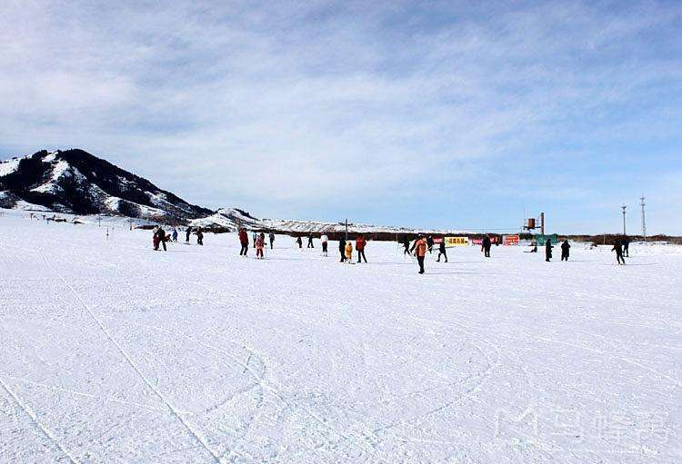
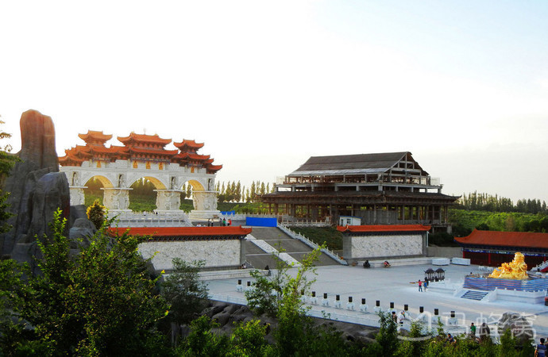
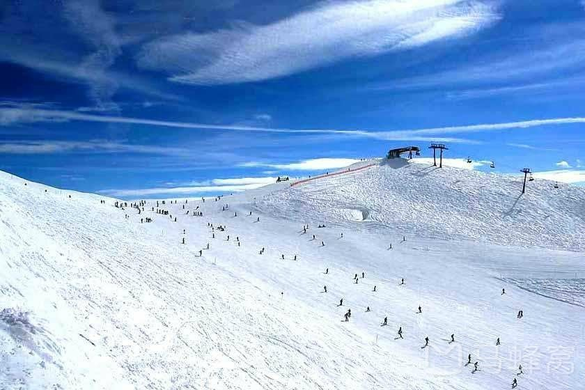
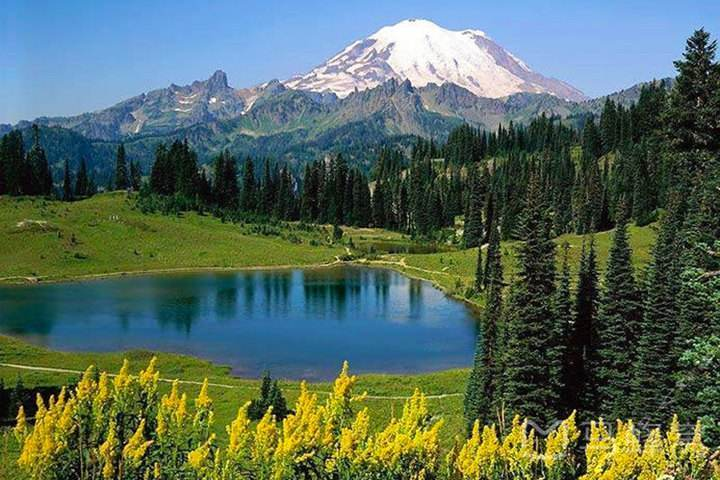
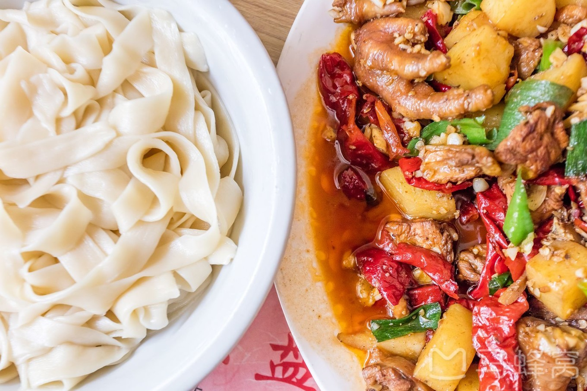
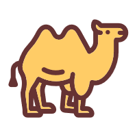

首页
目的地
历史
典故
丝绸商城
登录
注册
中国
乌鲁木齐
Ürümqi
乌鲁木齐，通称“乌市”，旧称迪化，是新疆维吾尔自治区首府，全疆政治、经济、文化、科教和交通中心。自治区面积为14216.3平方公里，辖7区1县，2017年末户籍人口为222万。乌鲁木齐地处中国西北，新疆中部，天山北麓，亚欧大陆腹地，毗邻中亚各国，有“亚心之都”的称呼。是世界上最内陆、距离海洋和海岸线最远的大型城市。
旅行家专栏

来乌鲁木齐五棵松滑雪场，尽情驰骋在广袤的西北大地！
北方早已下起了纷纷白雪，新雪季的大幕已经拉开，随着国内滑雪热潮的兴起，乌鲁木齐也成为广大滑雪爱好者国内滑雪的热门候选地之一。
旅行攻略

梦回西域 | 第一次去乌鲁木齐，这么住才是高性价比！
开篇先为宝兰线开通撒花一万次。一直想去兰州吃次正宗牛肉面，心愿终于得以实现，时间原因选在周末去兰州浪荡两天，此行的主要目的是以吃为主...

在乌鲁木齐蓝天滑雪场，享受雪天相接的别样西域滑雪
提到滑雪，人们的第一反应往往是著名的东北，然而在我国新疆地区，也有着丰富的滑雪资源。...

如果只能去一次新疆，最值得去的三个地方是哪？
对于很多人来说新疆都是一生中必须去看一次的地方。这里有雪山有沙漠还有各种森林湖泊.........

新疆包车吃货之旅，带你寻找最地道的新疆美食！
新疆，以其特有的绝美塞外风光、神秘的人文风情吸引着世界各地的旅行爱好者；而其富有民族特色、味道纯美的新疆美食，则是寻觅舌尖上美食旅者的必到之地。
当地特色
美食
酒店
景点
 下一站...